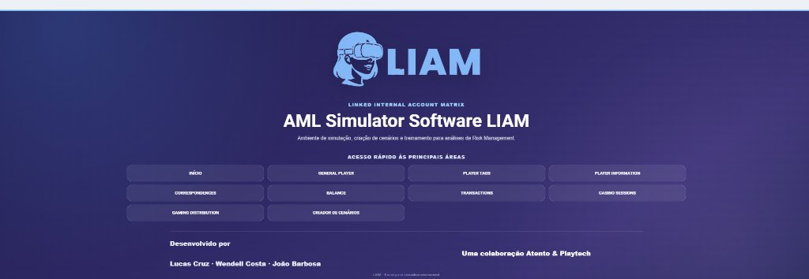
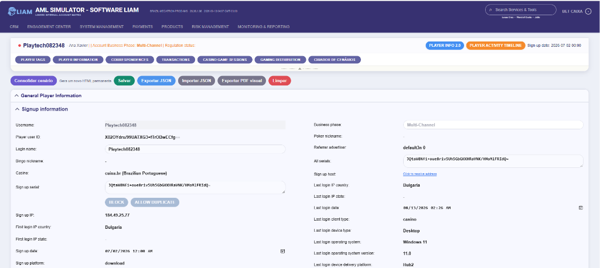
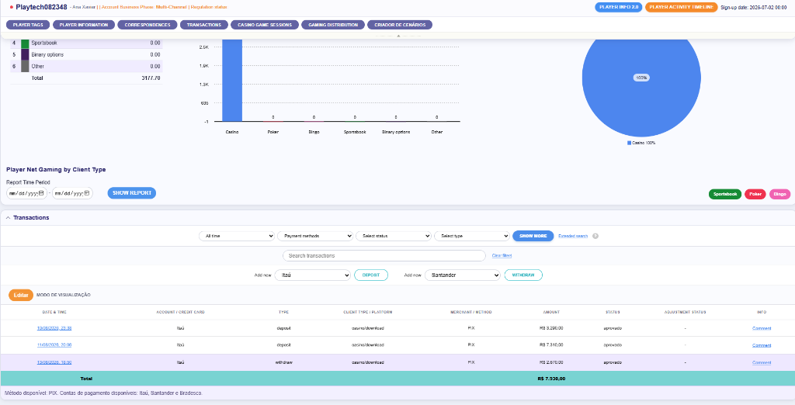

O desafio
Treinar analistas de Risk e AML diretamente em sistemas de produção é inviável por questões regulatórias e de sigilo. Criar cenários manualmente em planilhas era lento, pouco realista e inconsistente em termos matemáticos e financeiros.
JavaScript · AML Simulator · Risk Management
Linked Internal Account Matrix: plataforma e simulador web que reproduz o ambiente de investigação corporativo para gerar, gerenciar e treinar analistas em cenários complexos de AML, fraude e lavagem de dinheiro.

Treinar analistas de Risk e AML diretamente em sistemas de produção é inviável por questões regulatórias e de sigilo. Criar cenários manualmente em planilhas era lento, pouco realista e inconsistente em termos matemáticos e financeiros.
Padrão disperso de apostas com depósitos regulares e volumes proporcionais.
Simulação de cobertura quase total da mesa de roleta para giro artificial de volume.
Transações com tentativa de retirada logo após aporte, caracterizando lavagem.
Transferência indireta de valor por meio de perdas e ganhos coordenados em mesas ao vivo.
Apostas simultâneas em Player e Banker na mesma rodada com cálculo dinâmico de payout.
Capturas do software LIAM em execução no navegador.

